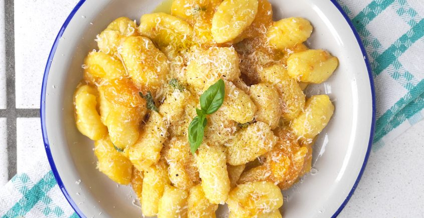

Gnocchi di Patate

Lista di ingredienti
- Patate rosse
- Uova
- Semola di grano duro
- Farina
- Sale fino
Preparazione
- Lessare e schiacciare le patate.
- Unire gli ingredienti, quindi impastare fino a formare una palla.
- Forma l'impasto in "serpenti".
- Tagliare i serpenti a pezzi.
- Lessare e scolare gli gnocchi.